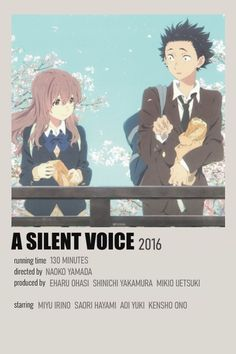
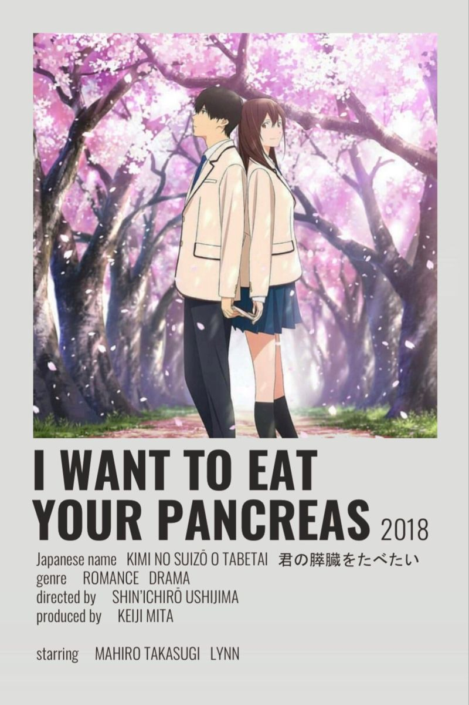

La película se dirige al público juvenil. Es la historia de dos adolescentes, Mitsuha y Taki, que se conocen de la manera más singular y mágica: cuando una lluvia de estrellas, provocada por la desintegración de un meteorito, causa un fenómeno raro en las vidas de los dos jóvenes.
Kimi no na wa (君の名は。), traducida como Your name, fue la película de animación japonesa más exitosa de 2016 y la más taquillera en ese año, incluyendo a películas de imagen real. Asimismo, es la tercera película de anime más taquillera de todos los tiempos, tras Kimetsu no Yaiba y El viaje de Chihiro.
Una Voz Silenciosa

Shôko Nishimiya, una estudiante de primaria sorda, empieza a sentir el bullying de sus nuevos compañeros cuando se cambia de colegio. El peor de todos es Ishida Shôya, quien termina por forzar que Nishimiya se cambie de escuela. Años después, Ishida buscará la redención de sus malas acciones.
Un chico llamado Shouya Ishida pone sus asuntos en orden y camina hacia un puente, con la intención de suicidarse. Recuperando sus sentidos en el último minuto, recuerda sus días en la escuela primaria y los eventos que lo llevaron a este punto en su vida.
La entrada de una nueva estudiante llamada Shouko Nishimiya en su clase despierta su interés: ella es sorda. A pesar de su discapacidad, hace todo lo posible por vivir normalmente y relacionarse con la clase. Sin embargo, los otros estudiantes y el maestro llegan a creer que su presencia está trastornando el equilibrio social. Piensan que ella los está imponiendo a través de su discapacidad. Shouya, que la considera extraña, comienza a intimidarla y acosarla sin fin.
Me Quiero Comer Tu Pancreas

Un día, un solitario estudiante de secundaria encuentra un libro de bolsillo en el hospital. Resulta ser un diario de una compañera de clase, Sakura Yamauchi, en el cual escribe que le quedan sólo unos cuantos meses de vida, debido a una enfermedad que afecta a su páncreas.
"Yo" es un estudiante de secundaria que no siente ningún interés por los demás y se pasa todo el tiempo solo leyendo libros. Un día, en una sala de espera de un hospital se encuentra un libro titulado "Vivir con la muerte", que resulta ser el diario secreto de Sakura Yamauchi, una chica popular de su clase. En él relata que le han diagnosticado una enfermedad pancreática terminal y que ha decidido no contárselo a nadie y exprimir al máximo el tiempo que le queda de vida. A pesar de su desdén inicial, la actitud de la chica hace que el corazón de "Yo" se va ablandando poco a poco. Estos son los recuerdos primaverales de una chica que convive con una enfermedad terminal, un chico que le guarda el secreto y una relación que todavía no tiene nombre.